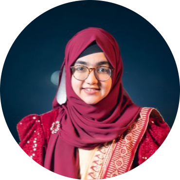

Amina
Aspiring Researcher
Computer Science & Engineering Graduate


My journey started with teaching. While working with students I noticed something that stayed with me. Students were learning mostly from books, so I started introducing more visual and interactive ways of learning. That experience eventually led me to build educational projects such as Webdiv , CodeLabs , and Qwiki . It shaped the way I think about technology — not just as something that works, but as something people should be able to understand and interact with. Since then, I’ve explored different areas of computing through research and hands-on projects, including Machine Learning, Blockchain , and NLP. My research has led to publications in areas ranging from Cricket Video Understanding and ML-based Blockchain Consensus to Bangla Language Generation and Human-AI Interaction.
Currently, I’m especially motivated to pursue research in Natural Language Processing, with a growing interest in large language models, language generation, prompting, and human-centered AI. I enjoy exploring new ideas, experimenting with different approaches, and finding meaningful connections between research and real-world problems.